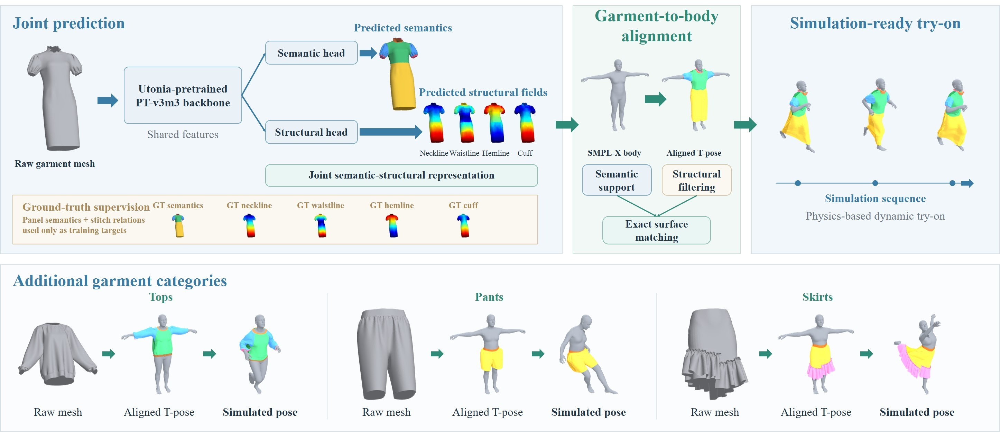

Overview
We study fine-grained 3D garment part understanding on assembled garment meshes. Unlike garment-category segmentation, our task assigns functional labels within each garment and augments discrete semantics with continuous topology-aware structural fields for anatomy-aware virtual try-on.
Functional part semantics
A unified 12-class vertex-level label space captures collar, waist, hem, cuff, sleeve, front/back regions, pockets, ruffles, and hats.
Topology-aware structure
Four continuous fields encode mesh-geodesic position relative to neckline, waistline, hemline, and cuff anchors.
Try-on alignment
Semantics restrict anatomical support, while structural fields refine within-region correspondence and reduce penetration.
Method Overview
Our pipeline jointly predicts fine-grained garment-part semantics and topology-aware structural fields, then uses the predicted cues for garment-to-body alignment before dynamic try-on simulation.

Fine-Grained Garment Part Segmentation
The task reasons about parts within an individual garment, rather than predicting only the garment category or original sewing-panel identity. Interactive PLY meshes below compare ground truth and prediction directly in 3D.
Ground Truth
Prediction
Vertex colors are read directly from the PLY files. The two views are synchronized for side-by-side comparison.
Per-Class Segmentation Results
Per-class IoU (%). Semantic-only denotes the semantic-only PT-v3m3 baseline, while Ours adds topology-aware structural supervision with boundary weighting.
| Part | PT-v3m1 | Semantic-only | Ours |
|---|---|---|---|
| Body F. | 79.54 | 84.13 | 85.63 |
| Body B. | 80.15 | 85.27 | 86.69 |
| Lower F. | 81.58 | 87.79 | 88.92 |
| Lower B. | 80.73 | 87.89 | 88.99 |
| Sleeve | 88.91 | 89.74 | 90.76 |
| Collar | 63.78 | 66.51 | 69.88 |
| Waist | 36.13 | 47.66 | 52.31 |
| Cuff | 35.56 | 44.43 | 53.03 |
| Hem | 48.55 | 48.28 | 50.00 |
| 1.87 | 16.66 | 19.59 | |
| Ruffles | 66.36 | 88.87 | 88.80 |
| Hat | 91.53 | 91.83 | 93.46 |
Since overall metrics can be dominated by large garment regions, we also report all 12 semantic classes separately. Compared with the semantic-only PT-v3m3 variant, our joint representation improves 11 of the 12 classes, with particularly clear gains on localized and structure-sensitive parts: waist improves from 47.66% to 52.31%, cuff from 44.43% to 53.03%, and collar from 66.51% to 69.88%. These results suggest that continuous topology-aware structural cues complement discrete semantic labels particularly around localized garment structures and semantic interfaces.
Topology-Aware Structural Fields
Discrete labels answer what part?; structural fields answer where within the garment structure? Select a garment and structural field to compare ground truth and prediction directly on the 3D surface.
Ground Truth
Prediction
Magenta denotes an invalid structural channel. Dress has all four valid channels; Top has an invalid waistline channel; Skirt and Pants have invalid neckline and cuff channels. PLY vertex colors are shown directly without remapping.
Garment-to-Body Alignment
Predicted part semantics constrain anatomically valid correspondences, and predicted structural fields refine within-region placement.
Dress
Top
Skirt
Pants
Interactive T-pose garment-to-body alignment examples for four garment categories. Drag to rotate, scroll to zoom, and right-drag to pan.
Alignment evaluation uses controlled region-specific subsets of the held-out test set. See the evaluation protocol for aggregation details.
Supplementary Material
Additional segmentation results, structural-field visualizations, simulation rollouts, annotation examples, and evaluation details are available in the repository. The full training and alignment code is not released at this stage.